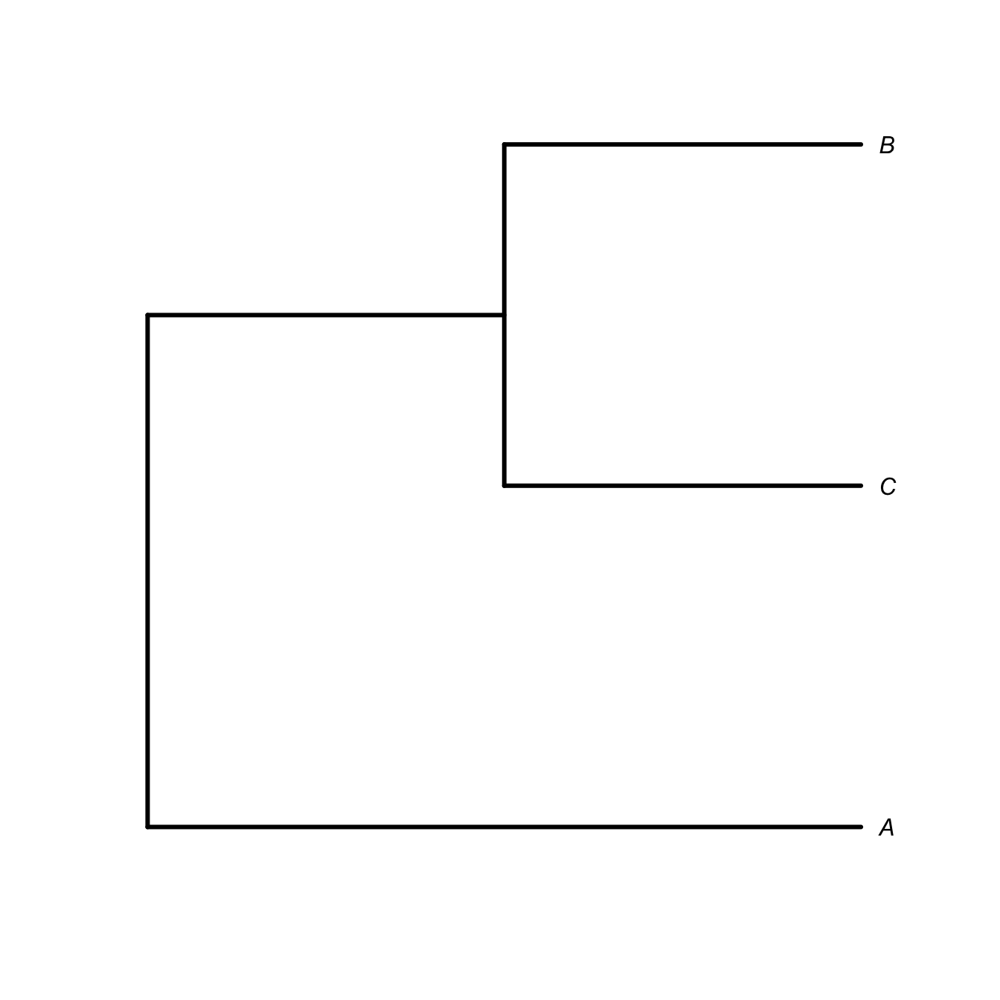
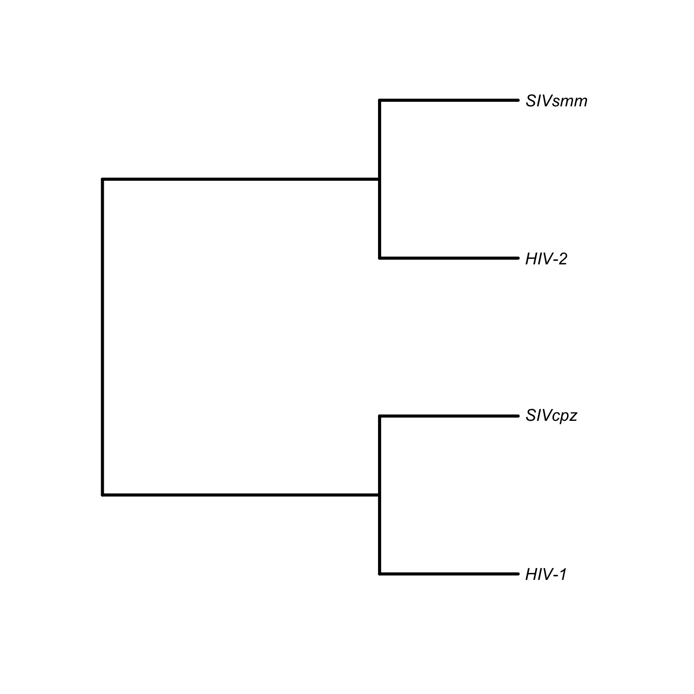
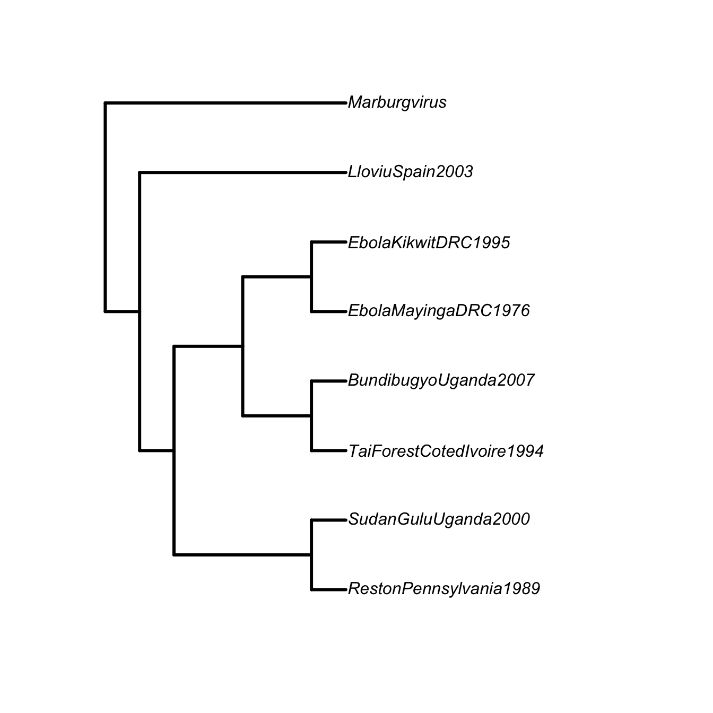
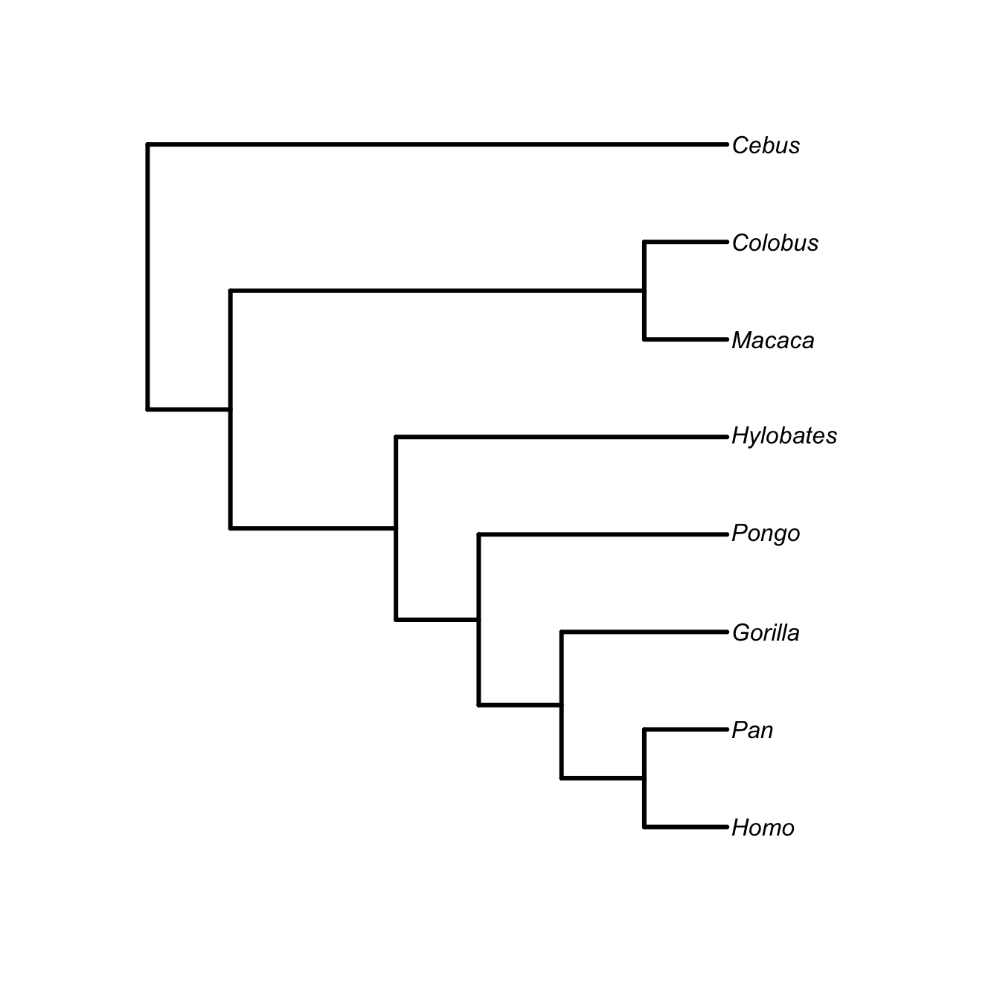

3 Evolution
3.1 Phylogenetic Trees
Phylogenetic analysis is an important tool for disease ecologists. Phylogenies can give us clues about the origins of pathogens, especially their relationships to other pathogens and the timing of their emergence and other important evolutionary transitions such as the aquisition of increased virulence. A phylogeny is a hypothesis of the evolutionary relationships between a group of taxa typically represented in a phylogenetic tree. A tree is a special graph (as in graph theory) which is connected and lacks cycles. Trees represent nested relationships. Every taxon within a clade is more closely related to each other than any are to anything outside the clade.
3.1.1 Phylogeny Terms
Phylogeny A hypothesis of the evolutionary relationships between a group of taxa, typically represented in a phylogenetic tree. A tree is a special graph which is connected and lacks cycles.
It’s important to know to read a phylogenetic tree. The tree represents nested relationships. Every taxon within a clade is more closely related to each other than any are to anything outside the clade. This means that you can rotate the terminal nodes around an internal node (i.e., a clade) and retain the same relationships. For example, if species \(B\) and \(C\) (along with their common ancestor) form a clade and \(A\) is an outgroup, then the nested relationships can be represented as \((A,(B,C))\). The following trees represent the same relations regardless of the ordering of \(B\) and \(C\) is the graphical representation of the phylogeny.
Cladogram A form of representing evolutionary relationships in which branch lengths are meaningless (usually same length).
Chronogram A form of representing evolutionary relationships in which branch lengths are proportional to time. The distance from root to leaf is the same for every leaf.
Phylogram A form of representing evolutionary relationships in which branch lengths are proportional to evolutionary divergence. The distance from root to leaf is not the same for every leaf.
Clade An ancestor and all its descendants.
Leaves are the extant taxa in a phylogeny, also terminal nodes.
Apomorphy A new (i.e., derived) character that arose through evolution. A synapomorphy is a shared-derived characteristic. A plesiomorphy is an ancestral character (which is therefore not useful for inferring relationships).
Node A vertex in the graph representing the evolutionary relations. A node can be internal, where it represents the point where one lineage splits into two or more lineages. A node can also be terminal, where it represents the present-day lineage.
Outgroup A more distantly-related taxon to the group of taxa whose relations are being represented. Allows the phylogeny to be rooted. While an outgroup must be more distantly-related than the taxa under consideration, it must be closely-enough related to allow meaningful comparisons to the ingroup.
Sister Group The group most closely related to the taxon under consideration. Marburg Virus is the sister group to Ebola Virus.
Paraphyletic A tree is paraphyletic if it contains an ancestor but excludes some or all of its descendants. Both HIV-1 and HIV-2 are paraphyletic groups because the naming convention excludes descendants from a common ancestor: SIVcpz in the case of HIV-1 and SIVsm in the case of HIV-2.
Polyphyletic An evolutionary hypothesis is polyphyletic if a group of taxa is derived from more than one common ancestor. The category of “HIV” is polyphyletic because HIV-1 and HIV-2 are derived from different ancestors.

3.2 Inference For Historical Population Dynamics
3.3 Other Terms
Degeneracy For some amino acids, there is a multiplicity of codons (triplets of DNA or RNA nucleotides that code for an amino acid or a stop) that specify a particular amino acid.
Synonymous Substitution Mutation where the substitution of one nucleotide for another has no effect on the resulting amino acid that is coded for.
3.3.1 Selective Constraint
- Measured using a dn/ds (or Ka/Ks) ratio
- Amino acids are determined by codons, sets of three bases in DNA or mRNA
- There are four bases at three positions in a codon, therefore are \(4^3=64\) possible codons
- But there are only 20 amino acids being coded for
- This means there is degeneracy in the genetic code
- Some amino acids are coded by 2, 3, 4, or more codons
- The degeneracy occurs in the third codon position
- When a mutation changes a base at a third-position in a codon, it may have no effect on the resulting amino acid, because of the degeneracy of the code
- Selection is therefore much weaker on such synonymous substitutions
- A measure of selective looks at the ratio of synonymous substitutions to non-synonymous substitutions
- When this ratio is high, there is strong evidence of positive selection
- When the ratio is very low, there is evidence of selective constraint

